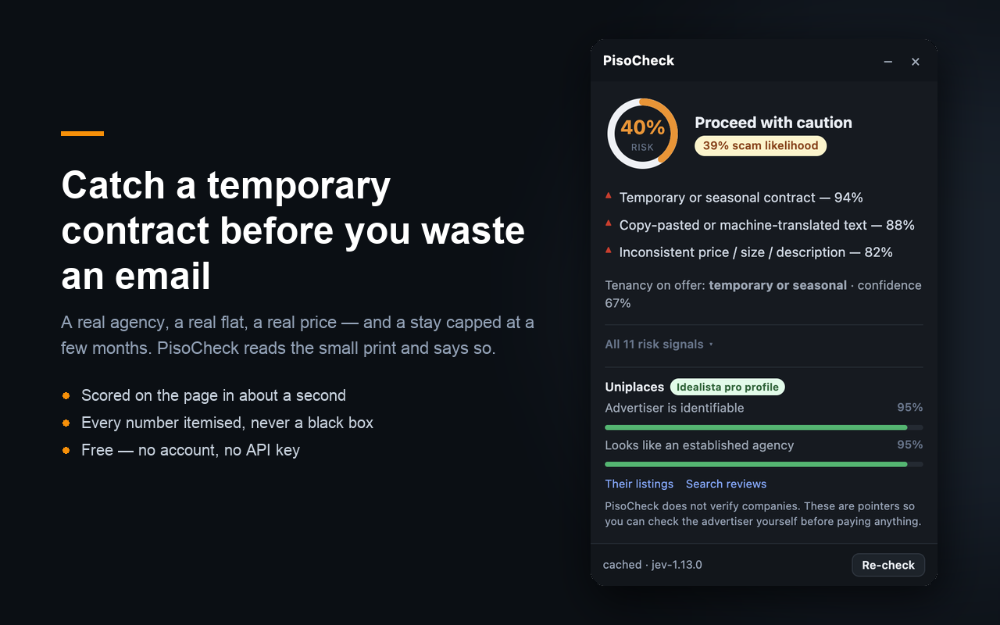

PisoCheck scores Idealista rental listings for scam and contract risk — on the page, in about a second, while you are still reading the advert.
Get it See what it catchesFree. No account, no API key, nothing to set up.

The extension reads the advert already on your screen: price, size, area, terms, description.
Fourteen narrow questions are answered in a single request by TypeSafe's decision model, which returns calibrated probabilities rather than prose.
Strong candidate, caution or skip — with every signal behind it named and scored.
PisoCheck reads only the Idealista listing page you have open, and sends only that advert's public content in order to score it. No account, no analytics, no tracking, nothing about you. Results are cached in your own browser for 24 hours. Full policy.